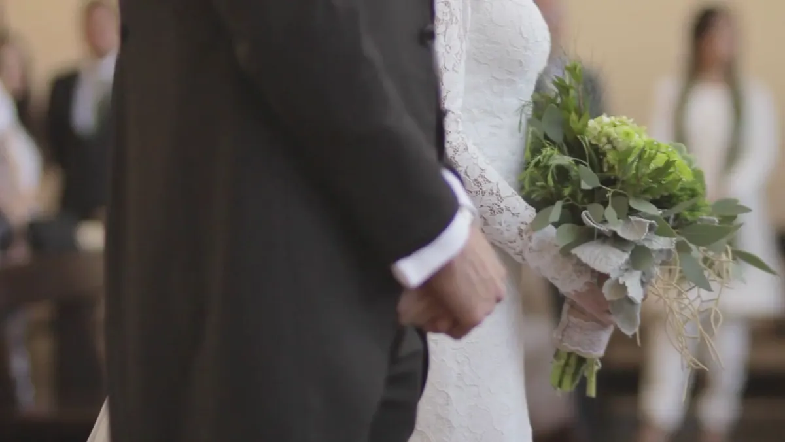

Fotografo i matrimoni mentre accadono.
Portfolio
Qualche fotografia dagli ultimi matrimoni. Le altre sono nel portfolio.
Chi sono
Mi chiamo Leo Luca Iacoviello e fotografo matrimoni. Durante la giornata mi muovo piano e parlo poco: preferisco che vi dimentichiate di me. Non vi chiederò di mettervi in posa, se non per qualche minuto con le famiglie. Quello che conta succede quando nessuno guarda l'obiettivo.
Domande frequenti
Quanto costa un servizio?
Dipende da durata, luogo e da cosa volete ricevere. Scrivimi data e location e ti mando un preventivo.
Ti sposti fuori regione?
Sì, in tutta Italia e all'estero. Il viaggio lo mettiamo nel preventivo, senza sorprese.
Quando arrivano le foto?
In una galleria online, di solito entro otto settimane dal matrimonio.
Contatti
Raccontami la data, il luogo e che giornata avete in mente.
Rispondo entro due giorni.